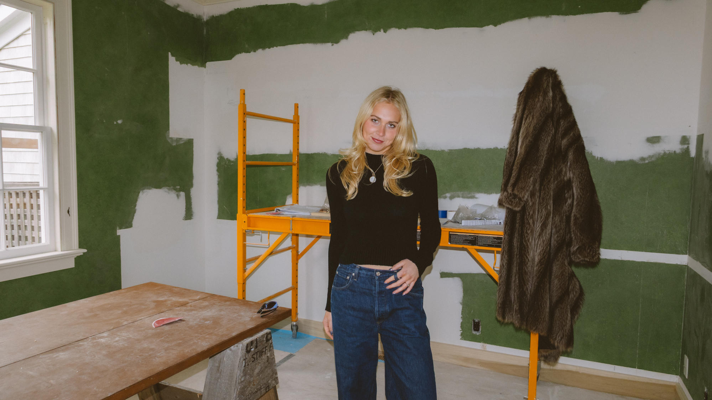
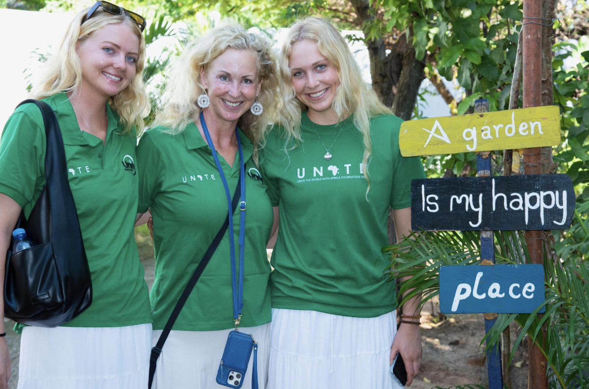
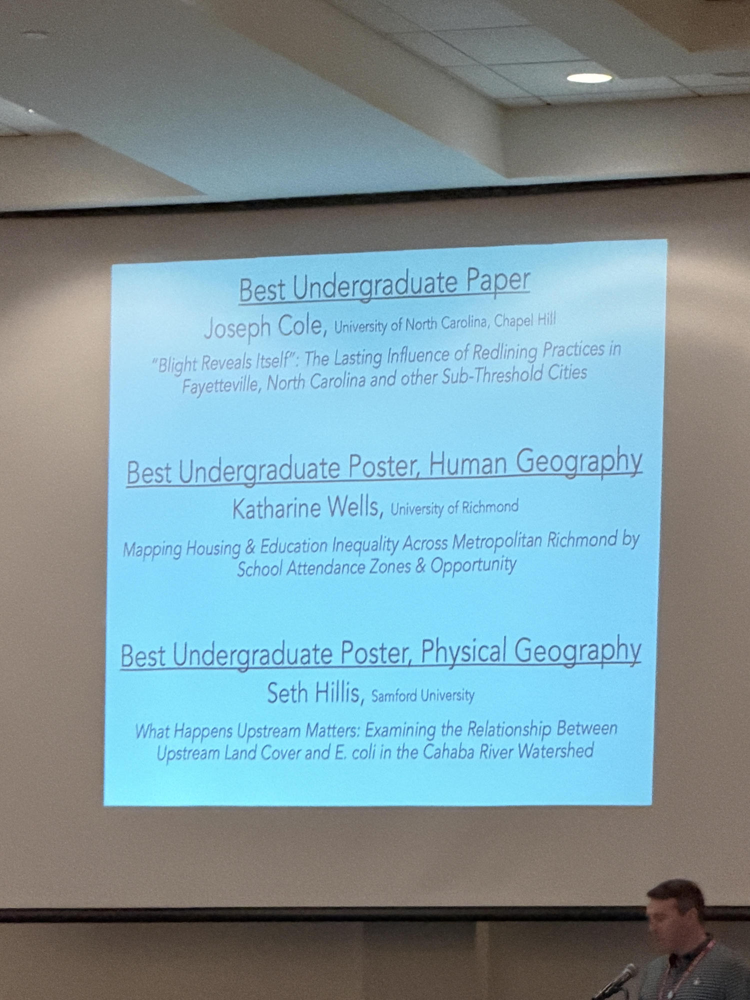
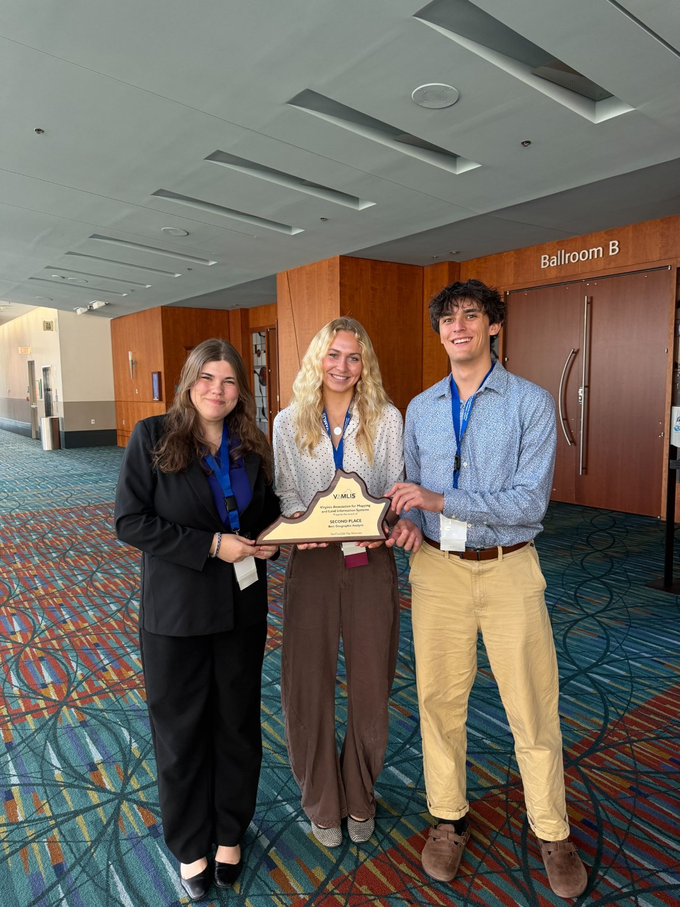
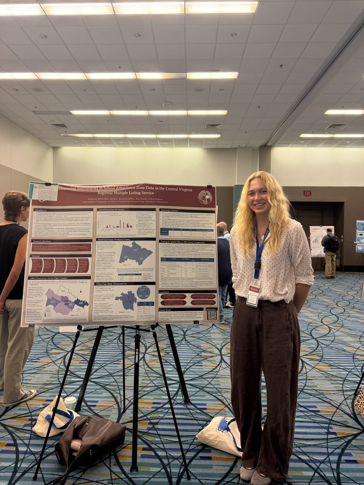
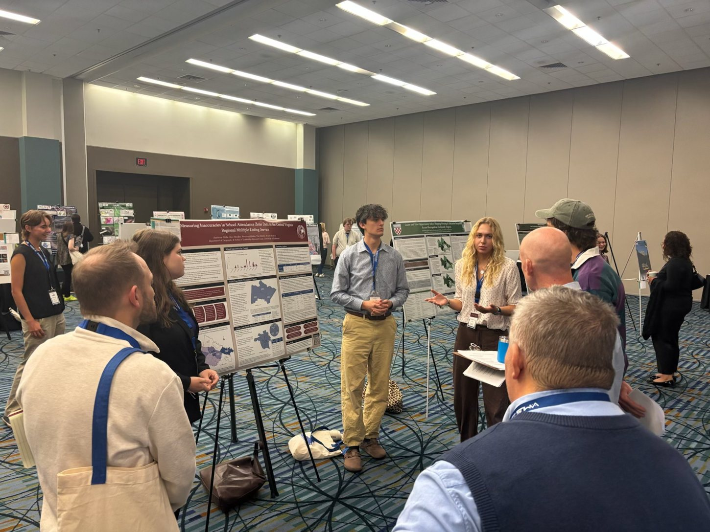

Section · 03
About


i
Experience
ii
Education
iii
Toolkit
iv
Recognition & Résumé

SEDAAG 2026 · ALABAMA · HUMAN GEOGRAPHY
Best Undergraduate Poster
Recognized at the 2026 SEDAAG meeting in Alabama for undergraduate poster research. The award included a $250 stipend.
- Second Place · Best Geographical AnalysisVAMLIS GeoCon 2026 · Live and Learn Opportunity Index

- 2027 AERA Annual Meeting · accepted presentationLearn and Live Opportunity Index: Mapping Housing & Education Inequality Across Metropolitan Richmond, Virginia. Accepted November 6, 2026 for the April 14–18 meeting in Toronto; not yet presented or published.

